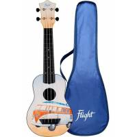

-------------------------------------INSTRUMENTOS DE MUSICA--------------------------
guitarra
La guitarra es un instrumento musical de cuerda pulsada, compuesto de una caja de madera, un mástil sobre el que va adosado el diapasón o trastero.
*bandurria:
La bandurria es un instrumento de cuerda pulsada y pertenece a la familia del laúd español

*acordeon:
El acordeón es un instrumento musical armónico de viento, constituido por un fuelle, un diapasón y dos cajas armónicas de madera. En sus dos extremos el fuelle está cerrado por las cajas de madera.

*lira:
La lira, es un instrumento de cuerda punteada antiguo, con forma de ábaco, cuyo origen los griegos atribuyeron a Hermes, dios de la retórica y el comercio.